I rasterize triangles by first calculating important information that determines the equations used. The first item I calculate is the orientation of the points provided. The orientation is given by the cross product of two vectors. Then, I determine the starting and ending x and y coordinates of the loops. This is done by determining the max and min x and y values given. Then for each pixel in the bounding box I determine if the pixel is within the triangle using the 3-line tests. These tests vary depending on the orientation of the triangle. Finally, if the pixel is determined to be in the triangle I call fill_pixel.
My algorithm is no worse because it is the algorithm that checks each value in the bounding box. This is done by only checking the pixels within the min and max x and y values calculated.
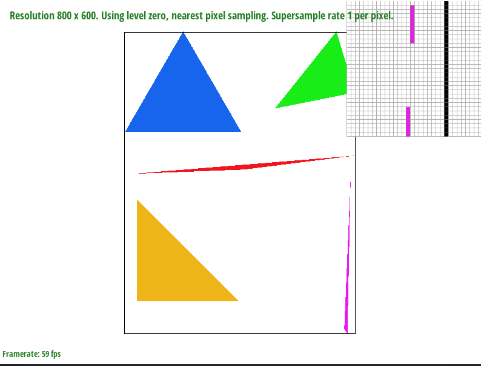I chose this section of the image as it demonstrates the limited ability of the base rasterizer to accurately represent thin lines. Since the tip of the pink triangle is between the middle of the pixel, it escapes being rasterized correctly. This issue is resolved after implementing supersampling.
To make the change to supersampling, my rasterizer first draws an image to the sample buffer with dimensions scaled by the supersample rate. To accomodate the larger image I resize the sample buffer to be sample_rate * width * height. I also clear the buffer when it is resized. Then in rasterize_triangle() I scaled the x and y coordinates of the vertices by multiplying them by sqrt(sample_rate). I use the square root because if we supersample by 4 pixels, the height and width of the image is multiplied by two. The rest of rasterize_triangle remains the same. In resolve_to_framebuffer() I scaled the loop bounds by sqrt(sample_rate), and incrementing each time by sqrt(sample_rate). I increment by sqrt as I want the original resolution to remain the same. If I instead incremented by 1 the final image resoluation would increase, and no supersampling would take place. In each inner loop I then loop from 0 to sqrt(sample_rate) both vertically and horizontally. This is done so I can average the color of each pixel. In effect this algorithm is akin to caching as each inner loop only concerns itself with its immediate neighbors. Finally I made changes to fill_pixel(). Fill pixel handles two cases, if a line is being drawn or if a pixel is being filled in by rasterize_triangle(). If a line is being drawn, for each pixel fill_pixel() draws sample_rate pixels. This is done because if lines are drawn in their original location then they will be in the corner of the image. If it is not a line then fill_pixel operates the same. This algorithm supersamples lines.
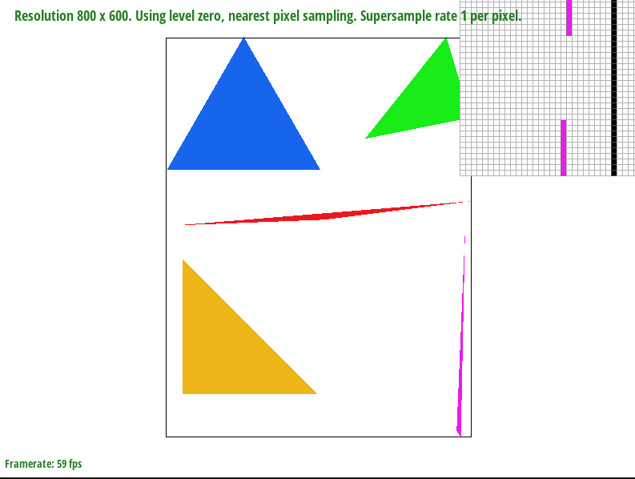Test 4 with sample rate 1. This is the image with no supersampling, and the triangles have multiple aliasing issues. Of particular note is the pink triangle which is missing pixels near the tip. This is because part of the triangle occupies a region between pixels, leading to the 3-line test reporting certain pixels in the triangle as outside.
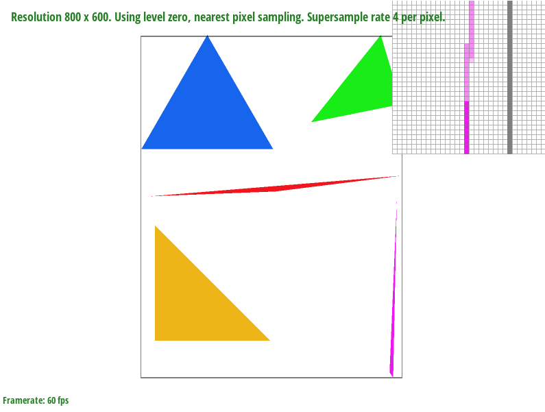Test 4 with sample rate 4. With 4 pixel supersampling the tip of the pink triangle that was previously unrasterized appears. This is because with the higher resolution the rasterizer is able to average together the colors near the tip and show the triangle continuously. However because the supersample rate is only 4 pixels, the tip of the triangle remains more transparent as white pixels are averaged with the pink pixels.
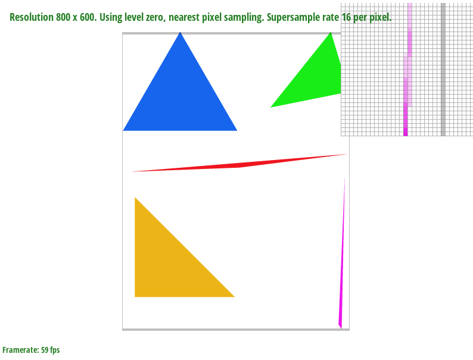Test 4 with sample rate 16. With 16 pixel supersampling the tip is more opaque and closer to the original resolution. This is due to less white pixels affecting the average of the colors in the 4x4 region.
I positioned my cubeman to mimic Leonardo Da Vinci's Vitruvian Man. I did this by first translating cubeman's arms and legs away from the body. I then rotated his arms and legs by 30 degrees, then translated them back to his torso. To make the effect work I then overlayed the original cubeman pose to complete the effect.
Rasterized triangle with red, green, and blue at each vertex.
Barycentric coordinates are a way to assign weights to pixels or values based on their relative position to the object. The coordinates work by linearly interpolating over the polygon from each of the vertices to the pixel. Each of these linear interpolations determines the value of alpha, beta, and gamma. These three variables add up to 1, and are used to determine how much of the final color should come from that specific vertix. For example if alpha = .2, beta = .6, gamma = .2, then we can say the final color should incorporate 20% of the first vertix color, 60% of the second vertix color, and 20% of the third vertix color.
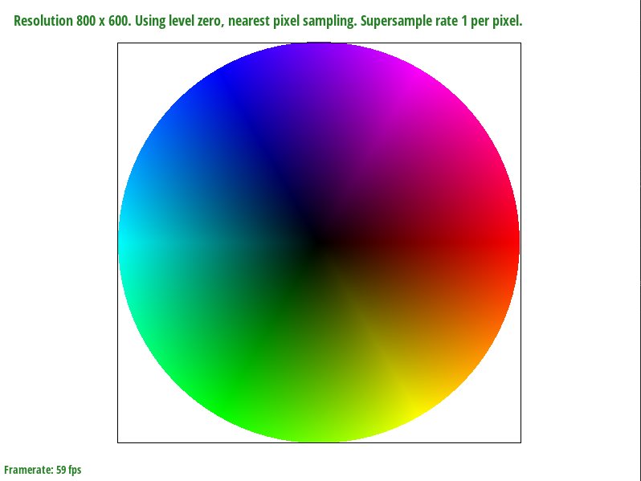Test 7 with sample rate 1.
Pixel sampling is the method of mapping pixels to an underlying texture pixel(texel). This is done by calculating the uv vector for each pixel in the triangle, accomplished through barycentric interpolation. Each uv value is within the range [0,1] and when multiplied by width or height will describe which texel color should be used for the pixel.
Nearest sampling returns the nearest texel to the value passed in by uv. Bilinear samplings takes the nearest 4 texels and performs 3 linear interpolations to "average" the colors between the texels.
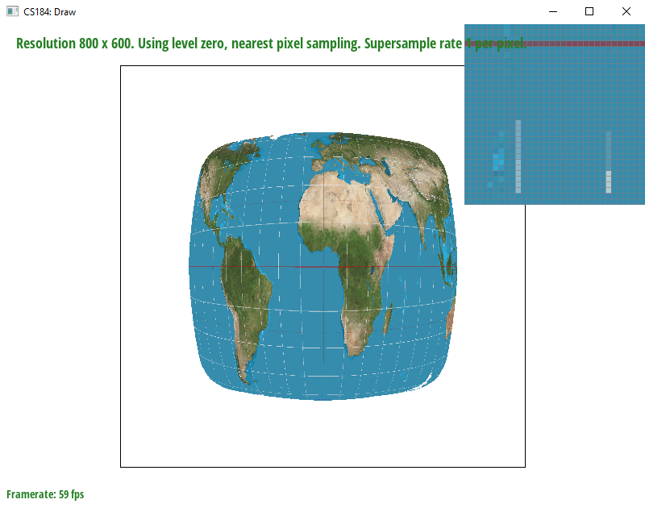Image with nearest sampling at 1 sample per pixel
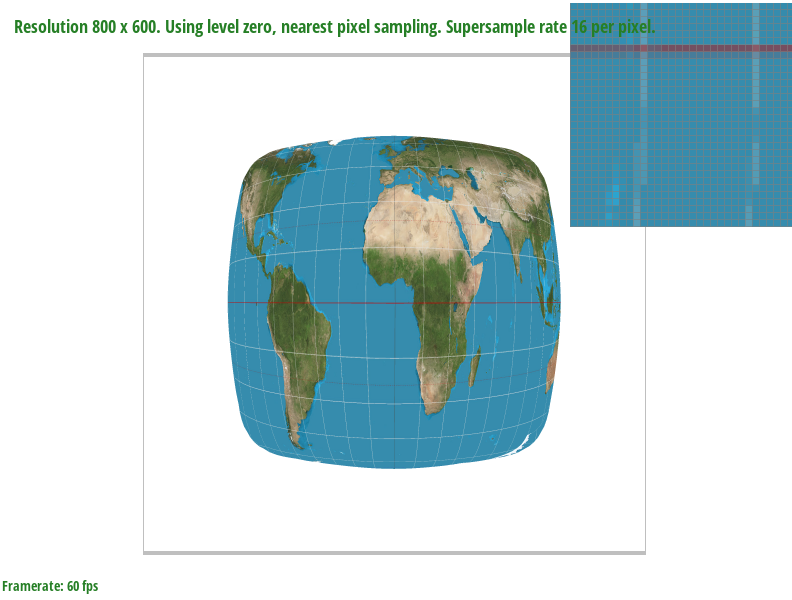Image with nearest sampling at 16 samples per pixel
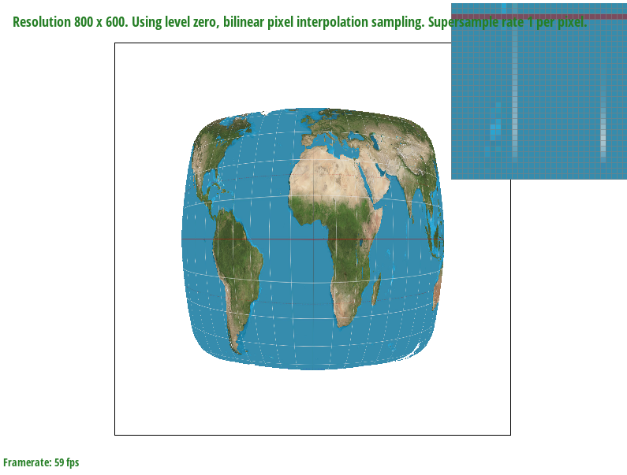Image with bilinear sampling at 1 sample per pixel
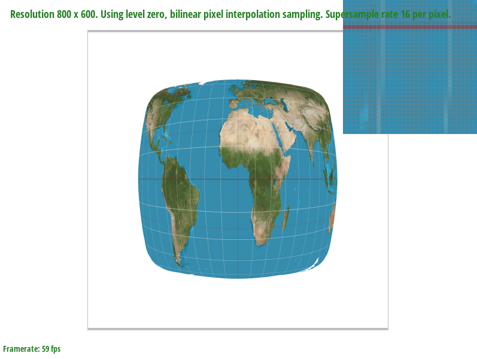Image with bilinear sampling at 16 samples per pixel
The switch between nearest and bilinear sampling shows a increase in the legibility of the white grid. In particular some of the lines that suffered from under-sampling appear more smooth and filled in. The jump to 16 pixel sampling dramatically benefits both nearest and bilinear sampling. The difference at 16 pixels between the two isn't very apparent apart from a slightly more gradual transition between colors in bilinear sampling.
Level sampling is a method of mapping pixels to texels in different mipmap levels. Each mipmap level is a lower resolution copy of the previous mipmap level, up to a certain threshold. Calculating the mipmap level is done by determining the amount of change(derivative) of u and v from the original pixel to a near subpixel. If the derivative is high then a higher mipmap level will be chosen and subsequently the texel chosen will be lower resolution. I implemented level sampling by calculating p_uv, p_dx_uv, and p_dy_uv by linearly interpolating between (x,y), (x + 1, y), and (x, y+ 1). After calculating the mipmap level, I pass the uv value and the level into either sample_nearest() or sample_bilinear(). The main change to these two functions is that each value is scaled depending on the width and height of the mipmap level. This is done so the dimensions passed into the mipmap are not out of bounds.
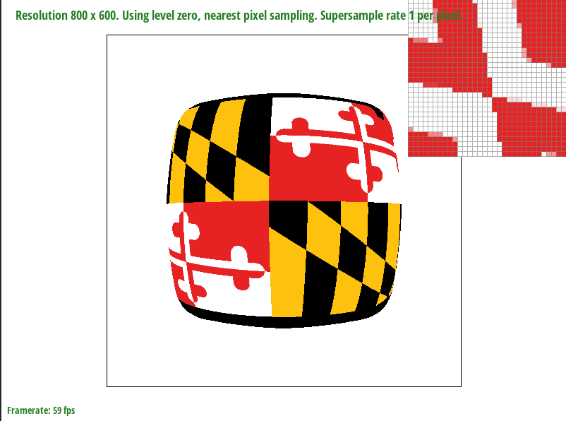Custom image with no super sampling, nearest pixel level, and nearest pixel sample.
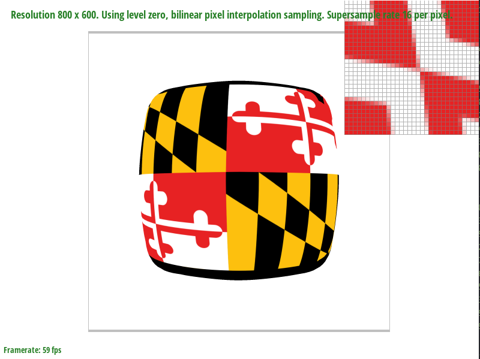Custom image with 16 samples per pixel, level zero, and bilinear sampling.
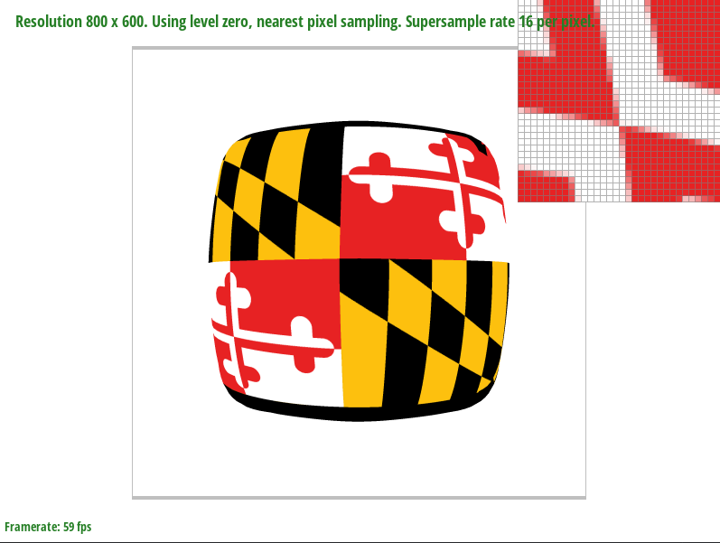Custom image with 16 samples per pixel, level zero, and nearest pixel sample.
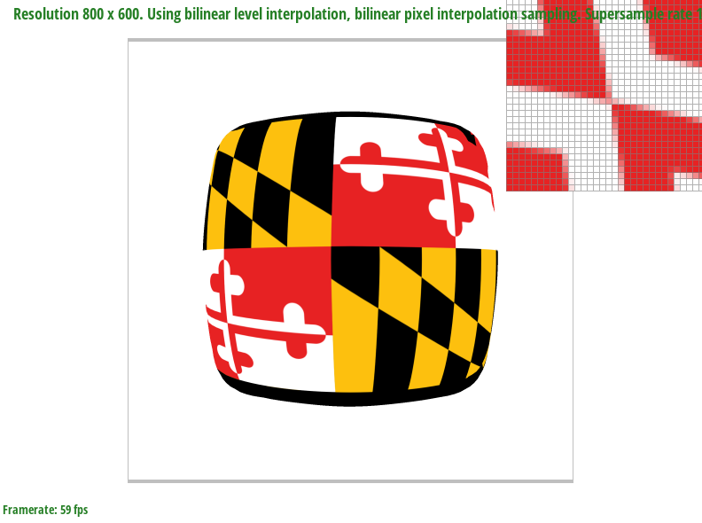Custom image with 16 samples per pixel, bilinear level interpolation, and bilinear sampling.
Increasing the number of samples per pixel will greatly increase the antialiasing power by increaing the sampling frequency. A downside is that supersampling uses much more memory and is slower as the rasterizer must first draw a higher resolution image then scale it down. Pixel sampling is similar to supersampling by averaging the nearest values, however it does not need to generate a higher resolution image. Thus it will be faster than supersampsling, albeit with less antialiasing power. Level sampling uses more storage than pixel sampling as it requires more sublevels. It will use less processing power than pixel sampling.